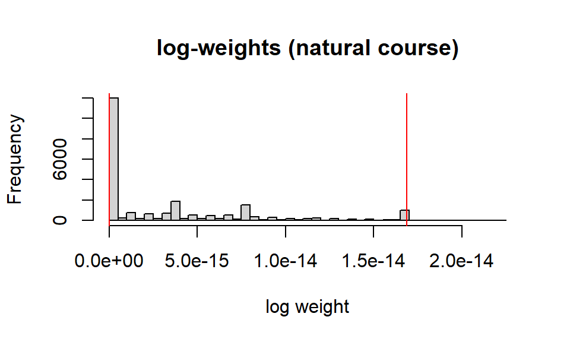
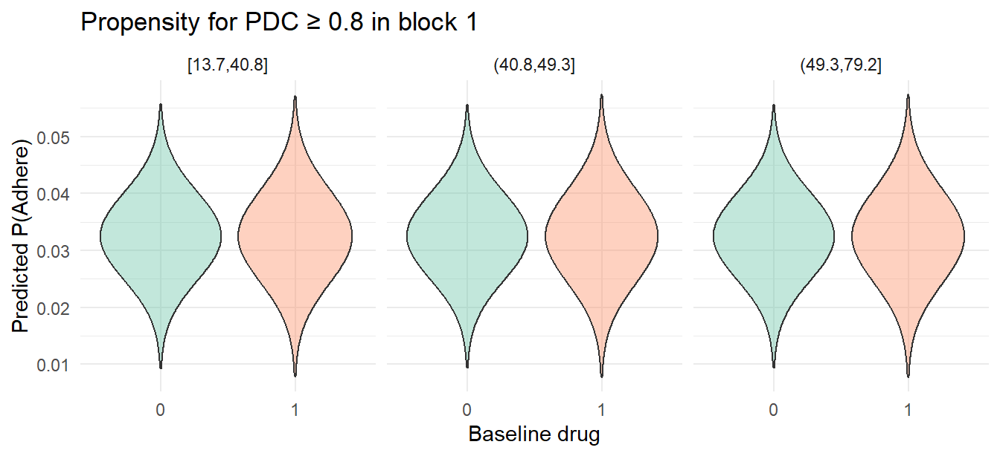

{lmtp}Goal Guide a new analyst through a full longitudinal‑confounding workflow with the
{lmtp}package, using the HIV adherence simulator we built. We will:
1. simulate data, 2. reshape wide, 3. specify intervention rules, 4. fit LMTP models, 5. inspect positivity, and 6. interpret drug‑effect contrasts.
############################################
## 0 ─ Packages & options
############################################
knitr::opts_chunk$set(warning=F, message=F)
library(data.table)
library(tidyverse)
library(zoo)
library(SuperLearner)
library(lmtp)
library(future)
# allow large objects in cross‑validated futures
options(future.globals.maxSize = 4 * 1024^3)
future::plan(multisession, workers = parallel::detectCores())
set.seed(123)Note: {lmtp} relies on nested
cross‑validation and can be very computationally expensive; setting a
4‑GB future.globals.maxSize avoids “global size” errors
when the data object is large.
We emulate 4 000 new ART users followed in six 180‑day blocks. Viral load (VL), kidney function (eGFR), prescriber switching, and VL‑measurement probability all evolve with treatment and affect future adherence— a classic time‑dependent confounding structure.
############################################
## 1 ─ Settings
############################################
N <- 4000 # patients
K <- 6 # six 180-day blocks
############################################
## 2 ─ Baseline data
############################################
age <- rnorm(N, 45, 10)
sex <- rbinom(N, 1, .25)
cd4 <- rpois(N, 500)
## Baseline regimen: 1 = Drug A, 0 = Drug B
A0 <- rbinom(N, 1, plogis(-0.3 + 0.01*(cd4-500) - 0.2*sex))
long <- CJ(id = 1:N, t = 0:(K-1))
long[, `:=`(age = age[id],
sex = sex[id],
cd4 = cd4[id],
A = A0[id])]
############################################
## 3 ─ Longitudinal simulation
############################################
for (tt in 0:(K-1)) {
if (tt == 0) {
long[t==0, PDC := rbeta(.N, 9 + 2*A, 5 + 3*(1-A))]
long[t==0, eGFR := rnorm(.N, 90 - 5*age/10 - 2*(1-A), 15)]
long[t==0, VL := rnorm(.N, 3.0 - 0.2*A - 0.6*PDC, 0.6)]
long[t==0, M := 1L] # baseline VL always measured
long[t==0, VL_obs := VL]
} else {
long[, c("PDC_prev","VL_prev","eGFR_prev") := NULL]
lag <- long[t==tt-1,
.(id, PDC_prev=PDC, VL_prev=VL, eGFR_prev=eGFR)]
long <- merge(long, lag, by="id", all.x=TRUE)
## prescriber switch
long[t==tt, SW := rbinom(.N,1,plogis(-4 + 1.2*VL_prev + 0.8*(PDC_prev<0.6)))]
long[t==tt & SW==1, A := 1 - A]
## adherence, eGFR, VL
long[t==tt, PDC := pmin(1, pmax(0,
rbeta(.N, 8 + 2*A - 1.0*tt/K + 1.2*(VL_prev>3),
6 + 4*(1-A) + 1.0*tt/K)))]
long[t==tt, eGFR := pmin(120, pmax(10,
rnorm(.N, eGFR_prev - 0.5*(VL_prev>3) + 0.2*A, 10)))]
long[t==tt, VL := rnorm(.N,
2.7 - 0.2*A - 1.8*PDC + 0.4*VL_prev + 0.01*(100-eGFR),0.6)]
## measurement indicator
long[t==tt, M := rbinom(.N,1,plogis(-1 + 1.2*(VL>3) - 0.5*A))]
long[t==tt, VL_obs := ifelse(M==1, VL, NA_real_)]
}
}
############################################
## 4 ─ Impute *all* missing VLs (guaranteed complete)
############################################
long[, VL_imp := zoo::na.locf(VL_obs, na.rm = FALSE), by = id]
long[, VL_imp := zoo::na.locf(VL_imp, fromLast = TRUE, na.rm = FALSE), by = id]
stopifnot(all(!is.na(long$VL_imp))) # passes
############################################
## 5 ─ Outcome & wide reshape (no NA rows)
############################################
long[, Y := as.integer(VL >= log10(200)), by = id]
## last-block outcome per id
outcome <- long[t == (K-1), .(id, Y)]After running, you should have long with
no missing VL_imp and realistic feedback
between treatment → VL → future adherence.
{lmtp}lmtp_sdr() in wide mode needs one row per
subject with block‑level columns. We also create a duplicate
baseline drug column named A for clarity.
## wide-format longitudinal block-level variables
Wlong <- dcast(long, id ~ t,
value.var = c("PDC","VL_imp","eGFR","M","SW"))
## merge with *baseline* covariates and outcome (one row per id)
baseline <- long[t==0, .(id, age, sex, cd4, A)]
wide <- merge(baseline, Wlong, by="id")
wide <- merge(wide, outcome, by="id")
#Drop baseline switch decision (all NA)
wide[, SW_0 := NULL]
head(wide)## Key: <id>
## id age sex cd4 A PDC_0 PDC_1 PDC_2 PDC_3
## <int> <num> <int> <int> <int> <num> <num> <num> <num>
## 1: 1 39.39524 0 484 1 0.7598766 0.6067949 0.6482170 0.6354454
## 2: 2 42.69823 0 553 1 0.8162333 0.6266917 0.6341811 0.5780071
## 3: 3 60.58708 0 507 0 0.7021332 0.4061550 0.5856960 0.7852081
## 4: 4 45.70508 0 523 0 0.6834556 0.5959444 0.4711834 0.8181404
## 5: 5 46.29288 0 480 1 0.6908311 0.5461305 0.5577337 0.3606371
## 6: 6 62.15065 1 501 1 0.8350873 0.6944804 0.8207580 0.5805873
## PDC_4 PDC_5 VL_imp_0 VL_imp_1 VL_imp_2 VL_imp_3 VL_imp_4 VL_imp_5
## <num> <num> <num> <num> <num> <num> <num> <num>
## 1: 0.4870895 0.5084234 2.064436 2.064436 2.064436 2.064436 4.530751 4.530751
## 2: 0.3377387 0.4388281 2.353548 2.353548 2.353548 2.353548 3.250262 3.250262
## 3: 0.4092935 0.3631273 3.174790 3.174790 3.174790 3.174790 3.174790 3.174790
## 4: 0.5771498 0.6109966 2.862672 2.862672 2.862672 2.862672 3.505998 3.505998
## 5: 0.4636720 0.6829748 2.232195 2.232195 2.232195 2.232195 2.232195 2.232195
## 6: 0.3363335 0.4425417 2.026128 2.026128 2.026128 2.975800 2.975800 2.975800
## eGFR_0 eGFR_1 eGFR_2 eGFR_3 eGFR_4 eGFR_5 M_0 M_1 M_2
## <num> <num> <num> <num> <num> <num> <int> <int> <int>
## 1: 53.51247 40.59073 40.98703 26.41821 16.81106 14.25523 1 0 0
## 2: 78.23627 82.01622 72.11864 68.12226 72.69176 68.32935 1 0 0
## 3: 52.76850 63.32728 62.92488 52.11680 52.05794 55.54990 1 0 0
## 4: 51.80772 41.71005 36.33968 36.09841 26.47890 18.47111 1 0 0
## 5: 80.15824 73.05298 72.51575 74.37254 59.04346 60.87165 1 0 0
## 6: 20.56316 38.29330 30.27268 30.14659 33.32667 32.21641 1 0 0
## M_3 M_4 M_5 SW_1 SW_2 SW_3 SW_4 SW_5 Y
## <int> <int> <int> <int> <int> <int> <int> <int> <int>
## 1: 0 1 0 0 0 0 0 1 1
## 2: 0 1 0 0 0 0 1 1 1
## 3: 0 0 0 0 1 1 0 0 1
## 4: 0 1 0 1 0 1 0 1 1
## 5: 0 0 0 1 0 1 1 0 1
## 6: 1 0 0 0 0 0 1 1 1table(is.na(wide))##
## FALSE
## 140000## final checks
stopifnot(nrow(wide) == N)
stopifnot(all(colSums(is.na(wide)) == 0))
wide = data.frame(wide)
head(wide, 3)## id age sex cd4 A PDC_0 PDC_1 PDC_2 PDC_3 PDC_4
## 1 1 39.39524 0 484 1 0.7598766 0.6067949 0.6482170 0.6354454 0.4870895
## 2 2 42.69823 0 553 1 0.8162333 0.6266917 0.6341811 0.5780071 0.3377387
## 3 3 60.58708 0 507 0 0.7021332 0.4061550 0.5856960 0.7852081 0.4092935
## PDC_5 VL_imp_0 VL_imp_1 VL_imp_2 VL_imp_3 VL_imp_4 VL_imp_5 eGFR_0
## 1 0.5084234 2.064436 2.064436 2.064436 2.064436 4.530751 4.530751 53.51247
## 2 0.4388281 2.353548 2.353548 2.353548 2.353548 3.250262 3.250262 78.23627
## 3 0.3631273 3.174790 3.174790 3.174790 3.174790 3.174790 3.174790 52.76850
## eGFR_1 eGFR_2 eGFR_3 eGFR_4 eGFR_5 M_0 M_1 M_2 M_3 M_4 M_5 SW_1
## 1 40.59073 40.98703 26.41821 16.81106 14.25523 1 0 0 0 1 0 0
## 2 82.01622 72.11864 68.12226 72.69176 68.32935 1 0 0 0 1 0 0
## 3 63.32728 62.92488 52.11680 52.05794 55.54990 1 0 0 0 0 0 0
## SW_2 SW_3 SW_4 SW_5 Y
## 1 0 0 0 1 1
## 2 0 0 1 1 1
## 3 1 1 0 0 1Why wide? In wide format we can specify multiple
treatment columns (A, PDC_0 … PDC_5) in a
list, which is the simplest interface for static policies. Long format
is equally supported but would need an id and
t column.
trt_nodes <- list(c("A","PDC_0"), "PDC_1","PDC_2","PDC_3","PDC_4","PDC_5")
Lnodes <- list(
c("VL_imp_0","eGFR_0","M_0"),
c("VL_imp_1","eGFR_1","M_1"),
c("VL_imp_2","eGFR_2","M_2"),
c("VL_imp_3","eGFR_3","M_3"),
c("VL_imp_4","eGFR_4","M_4"),
c("VL_imp_5","eGFR_5","M_5"))
sl_lib <- "SL.glm" # lightweight Super Learner for demoInterpretation: A is the exposure we want to
compare; PDC_k are continuous adherence modifiers also in
the treatment vector; each Lnodes[[k]] holds the
time‑varying confounders measured before that block’s
exposure.
## helper: returns named list for lmtp
set_cols <- function(data, trt, new_A = NULL, new_PDC = NULL){
out <- vector("list", length(trt)); names(out) <- trt
for(nm in trt){
if(nm == "A" && !is.null(new_A)) out[[nm]] <- rep(new_A, nrow(data))
else if(grepl("^PDC", nm) && !is.null(new_PDC)) out[[nm]] <- new_PDC[[nm]]
else out[[nm]] <- data[[nm]]
}
out
}
#### 1.1 Perfect adherence (PDC = 1) ####
A_perfect <- function(data, trt){
new_P <- lapply(trt[grepl("^PDC", trt)], function(x) rep(1, nrow(data)))
names(new_P) <- trt[grepl("^PDC", trt)]
set_cols(data, trt, new_A = 1, new_PDC = new_P)
}
B_perfect <- function(data, trt){
new_P <- lapply(trt[grepl("^PDC", trt)], function(x) rep(1, nrow(data)))
names(new_P) <- trt[grepl("^PDC", trt)]
set_cols(data, trt, new_A = 0, new_PDC = new_P)
}The natural‑course fit estimates the risk of virologic failure under what actually happened—it will serve as a reference when we impose hypothetical adherence interventions.
fit_nat <- lmtp_sdr(
data = wide,
trt = trt_nodes,
outcome = "Y",
baseline = c("age","sex","cd4"),
time_vary = Lnodes,
outcome_type = "binomial",
folds = 2,
learners_trt = sl_lib,
learners_outcome = sl_lib)summary(fit_nat) prints the estimated risk, standard
error, and clever‑covariate diagnostics, which we will revisit for
positivity.
We create a shift function that sets every PDC_t to 1
while leaving the baseline regimen unchanged.
## helper: returns named list for lmtp
set_cols <- function(data, trt, new_A = NULL, new_PDC = NULL){
out <- vector("list", length(trt)); names(out) <- trt
for(nm in trt){
if(nm == "A" && !is.null(new_A)) out[[nm]] <- rep(new_A, nrow(data))
else if(grepl("^PDC", nm) && !is.null(new_PDC)) out[[nm]] <- new_PDC[[nm]]
else out[[nm]] <- data[[nm]]
}
out
}
#### 1.1 Perfect adherence (PDC = 1) ####
A_perfect <- function(data, trt){
new_P <- lapply(trt[grepl("^PDC", trt)], function(x) rep(1, nrow(data)))
names(new_P) <- trt[grepl("^PDC", trt)]
set_cols(data, trt, new_A = 1, new_PDC = new_P)
}
B_perfect <- function(data, trt){
new_P <- lapply(trt[grepl("^PDC", trt)], function(x) rep(1, nrow(data)))
names(new_P) <- trt[grepl("^PDC", trt)]
set_cols(data, trt, new_A = 0, new_PDC = new_P)
}
## 2.1 Perfect adherence, Drug A vs B
fit_A_perfect <- lmtp_sdr(
data = wide,
trt = trt_nodes,
outcome = "Y",
baseline = c("age","sex","cd4"),
time_vary = Lnodes,
shift = A_perfect,
mtp = TRUE,
outcome_type = "binomial",
folds = 2,
learners_trt = sl_lib,
learners_outcome = sl_lib)
fit_B_perfect <- lmtp_sdr(
data = wide,
trt = trt_nodes,
outcome = "Y",
baseline = c("age","sex","cd4"),
time_vary = Lnodes,
shift = B_perfect,
mtp = TRUE,
outcome_type = "binomial",
folds = 2,
learners_trt = sl_lib,
learners_outcome = sl_lib)Why mtp = TRUE? Because PDC_t is
continuous; setting it from observed to 1 is a
modified‑treatment policy in LMTP terminology.
## block‑specific A minus B gap
gap_vec <- sapply(0:5, function(k){
with(wide,
mean(get(paste0("PDC_",k))[A==1]) -
mean(get(paste0("PDC_",k))[A==0]))
})
names(gap_vec) <- paste0("PDC_",0:5)
Astyle_PDC <- function(data,trt){
lapply(trt[grepl("^PDC",trt)], function(col){
pmin(1, data[[col]] + gap_vec[col])
}) |> (\(L){names(L) <- trt[grepl("^PDC",trt)]; L})()
}
A_Astyle <- function(data,trt){
set_cols(data,trt,new_A=1,new_PDC=Astyle_PDC(data,trt)) }
B_Astyle <- function(data,trt){
set_cols(data,trt,new_A=0,new_PDC=Astyle_PDC(data,trt)) }
fit_A_Astyle <- lmtp_sdr(wide, trt_nodes, "Y",
c("age","sex","cd4"), Lnodes,
shift = A_Astyle, mtp = TRUE,
outcome_type = "binomial", folds = 2,
learners_trt = sl_lib, learners_outcome = sl_lib)
fit_B_Astyle <- lmtp_sdr(wide, trt_nodes, "Y",
c("age","sex","cd4"), Lnodes,
shift = B_Astyle, mtp = TRUE,
outcome_type = "binomial", folds = 2,
learners_trt = sl_lib, learners_outcome = sl_lib)Rationale These fits imagine a world where every block’s adherence looks like Drug A’s distribution, then ask: if we also force the index drug to A vs B, how different is failure risk?
cat("Drug A vs B • Perfect PDC\n")## Drug A vs B • Perfect PDCprint(lmtp_contrast(fit_A_perfect, ref = fit_B_perfect, type = "additive"))##
## shift ref estimate std.error conf.low conf.high p.value
## 1 0.325 0.335 -0.0101 0.00151 -0.0131 -0.00712 <0.001print(lmtp_contrast(fit_A_perfect, ref = fit_B_perfect, type = "rr"))##
## shift ref estimate std.error conf.low conf.high p.value
## 1 0.325 0.335 0.97 0.0044 0.961 0.979 <0.001cat("\nDrug A vs B • Drug‑A adherence pattern\n")##
## Drug A vs B • Drug‑A adherence patternprint(lmtp_contrast(fit_A_Astyle, ref = fit_B_Astyle, type = "additive"))##
## shift ref estimate std.error conf.low conf.high p.value
## 1 0.922 0.915 0.00688 0.0103 -0.0134 0.0271 0.505print(lmtp_contrast(fit_A_Astyle, ref = fit_B_Astyle, type = "rr"))##
## shift ref estimate std.error conf.low conf.high p.value
## 1 0.922 0.915 1.01 0.0113 0.985 1.03 <0.001The additive result is the %-point reduction in failure when prescribing Drug A instead of Drug B under the given adherence regime. The RR gives the multiplicative effect. Compare the magnitudes: a smaller gap under A‑style adherence indicates that Drug B’s efficacy deficit is partly adherence‑driven; a persistent gap points to lower pharmacologic potency or higher resistance.
# density ratios = product of g & c weights
w <- fit_nat$density_ratios
hist(log(w), 50,
main = "log-weights (natural course)",
xlab = "log weight")
abline(v = quantile(log(w), c(.01,.99)), col = "red")
quantile(w, probs = c(0,.01,.05,.5,.95,.99,1))## 0% 1% 5% 50% 95% 99% 100%
## 1 1 1 1 1 1 1If the histogram has extreme tails (red lines far from the bulk), consider weight truncation, broader policies, or collapsers such as coarser PDC categories.
For additional intuition we can model the probability of achieving high adherence (here PDC ≥ 0.8) separately in each 180‑day block using a light Super Learner. We then compare the score distributions between Drug A and B — overall and within baseline‑age strata — to see whether support overlaps.
# pick first follow‑up block as example (block 1)
block <- 1
X <- data.frame(age = wide$age, sex = wide$sex, cd4 = wide$cd4,
drug = factor(wide$A))
Ahi <- as.integer(wide[[paste0("PDC_", block)]] >= 0.8) # high adherence (Y_ps)
ps_fit <- SuperLearner(Y = Ahi, X = X,SL.library = c("SL.glm","SL.mean"), family = binomial())
ps <- ps_fit$SL.predict # propensity for PDC≥0.8
# merge scores and plot by drug and age‑tertile
score_dat <- data.frame(ps, drug = X$drug,
age_band = cut(X$age, breaks = quantile(X$age, probs = 0:3/3),
include.lowest = TRUE))
ggplot(score_dat, aes(drug, ps, fill = drug))+
geom_violin(alpha = .4, trim = FALSE)+
facet_wrap(~age_band)+
scale_fill_brewer(palette="Set2")+
labs(title = paste("Propensity for PDC ≥ 0.8 in block", block),
y = "Predicted P(Adhere)", x = "Baseline drug")+
theme_minimal()+ theme(legend.position="none")
How to read the plot Substantial overlap of violin densities across Drug A/B in every age‑stratum indicates feasible positivity. Little or no overlap (one distribution hugs 0 or 1) warns that the adherence shift is poorly supported in certain baseline groups.
Lnodes_noVL <- lapply(Lnodes, function(vec) setdiff(vec, grep("^VL_imp|^eGFR", vec, value = TRUE)))
fit_nat_noVL <- lmtp_sdr(wide, trt_nodes, "Y",
c("age","sex","cd4"), Lnodes_noVL,
outcome_type = "binomial", folds = 5,
learners_trt = sl_lib, learners_outcome = sl_lib)
print(lmtp_contrast(fit_nat_noVL, ref = fit_nat, type = "additive"))##
## shift ref estimate std.error conf.low conf.high p.value
## 1 0.898 0.898 -1.11e-16 1.23e-16 -3.52e-16 1.3e-16 0.367Interpretation A large deviation from the full‑adjusted estimate indicates residual bias if VL and eGFR were ignored—mirroring what would happen with a naïve time‑varying Cox.
With these steps the analyst can adapt the tutorial to real EHR data once access is granted.